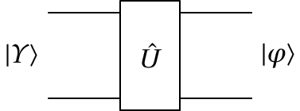
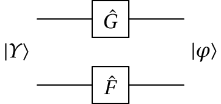
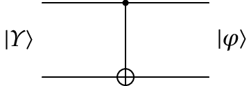
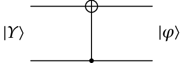

Jaime Villate. Faculdade de Engenharia da Universidade do Porto
No caso de dois qbits há 4 estados próprios, correspondentes aos 4 possíveis valores que podem ser representados com 4 cbits. O estado do sistema de 2 qbits será qualquer combinação linear desses 4 estados próprios:
\begin{displaymath} |\otherUpsilon\rangle = \otherUpsilon_1|00\rangle + \otherUpsilon_2|01\rangle + \otherUpsilon_3|10\rangle + \otherUpsilon_4|11\rangle \end{displaymath}em que os quatro números complexos $\otherUpsilon_i$ verificam a condição de normalização:
\begin{displaymath} |\otherUpsilon_1|^2 + |\otherUpsilon_2|^2 + |\otherUpsilon_3|^2 + |\otherUpsilon_4|^2 = 1 \end{displaymath}Os quatro números reais $|\otherUpsilon_i|^2$ são as probabilidades do estado ser um dos quatro estados próprios (valores possíveis de dois cbits). Os valores possíveis dos dois cbits podem ser representados por matrizes de uma coluna e quatro linhas:
\begin{displaymath} |00\rangle = \begin{bmatrix}1\\0\\0\\0\end{bmatrix} \qquad |01\rangle = \begin{bmatrix}0\\1\\0\\0\end{bmatrix} \qquad |10\rangle = \begin{bmatrix}0\\0\\1\\0\end{bmatrix} \qquad |11\rangle = \begin{bmatrix}0\\0\\0\\1\end{bmatrix} \end{displaymath}Como tal, o estado do sistema é representado por uma matriz coluna com quatro números complexos:
\begin{displaymath} |\otherUpsilon\rangle = \begin{bmatrix}\otherUpsilon_1\\\otherUpsilon_2\\ \otherUpsilon_3\\\otherUpsilon_4\end{bmatrix} \end{displaymath}Um caso particular do estado de 2 qbits é quando o estado do primeiro qbit for $|\otherPsi\rangle=\otherPsi_1|0\rangle+\otherPsi_2|1\rangle$, independente do estado $|\otherPhi\rangle=\otherPhi_1|0\rangle+\otherPhi_2|1\rangle$ do segundo qbit. Nesse caso, o estado do sistema dos dois qbits é igual ao produto tensorial dos dois kets:
\begin{displaymath} |\otherPhi\rangle|\otherPsi\rangle = \left(\otherPhi_1|0\rangle+\otherPhi_2|1\rangle\right) \left(\otherPsi_1|0\rangle+\otherPsi_2|1\rangle\right) = \otherPhi_1\otherPsi_1|00\rangle + \otherPhi_1\otherPsi_2|01\rangle + \otherPhi_2\otherPsi_1|10\rangle + \otherPhi_2\otherPsi_1|11\rangle \end{displaymath}Observe-se que no produto tensorial entre kets o ket do primeiro qbit coloca-se na segunda posição e o segundo na primeira posição. O produto tensorial entre dois cbits (estados próprios) obtém se juntado os dois cbits num só ket.
Na representação matricial, usaremos o operador $\otimes$ para o produto tensorial, para distingui-lo do produto matricial. O produto tensorial entre matrizes obtém-se multiplicando cada elemento da primeira matriz, pela segunda matriz:
\begin{displaymath} |\otherPhi\rangle|\otherPsi\rangle = \begin{bmatrix}\otherPhi_1\\ \otherPhi_2\end{bmatrix}\otimes \begin{bmatrix}\otherPsi_1\\ \otherPsi_2\end{bmatrix} = \begin{bmatrix}\otherPhi_1\otherPsi_1\\ \otherPhi_1\otherPsi_2\\ \otherPhi_2\otherPsi_1\\ \otherPhi_2\otherPsi_2\end{bmatrix} \end{displaymath}Observe-se que as condições de normalização dos kets $|\otherPsi\rangle$ e $|\otherPhi\rangle$, implicam a normalização do produto tensorial $|\otherPhi\rangle|\otherPsi\rangle$.
\begin{displaymath} |\otherPhi_1\otherPsi_1|^2 + |\otherPhi_1\otherPsi_2|^2 + |\otherPhi_2\otherPsi_1|^2 + |\otherPhi_2\otherPsi_2|^2 = \left(|\otherPhi_1|^2 + |\otherPhi_2|^2\right) \left(|\otherPsi_1|^2 + |\otherPsi_2|^2\right) = 1 \end{displaymath}A figura mostra o diagrama de circuito para os operadores de 2 qubits. A linha de cima representa o primeiro qbit e a linha de baixo o segundo. O estado dos qbits de entrada, $|\otherUpsilon\rangle$, é multiplicado por um operador unitário $\hat{U}$, produzindo o estado dos qbits de saída $|\varphi\rangle$. Na representação matricial, $\hat{U}$ é uma matriz complexa, unitária, com 4 linhas e quatro colunas.
 $|\varphi\rangle = \hat{U}|\otherUpsilon\rangle$
Um caso particular é a combinação de dois operadores de 1 qubit, cada um a atuar num dos dois qbits. A matriz correspondente seria o produto tensorial das duas matrices, 2 por 2, desses operadores de 1 qbit.
 $|\varphi\rangle = \left(\hat{F}\otimes\hat{G}\right)|\otherUpsilon\rangle$
Observe-se a ordem dos operadores no produto tensorial. Primeiro o operador que atua no segundo qbit e depois o que atua no primeiro qbit.
O operador mais importante de 2 qubits, porque pode ser usado em combinação com operadores de um qbit para obter outros operadores de 2 qbits, é o chamado controlled-NOT (não controlado), ou simplesmente cNOT. Existem dois desses operadores, designados de $\hat{C}_{12}$ e $\hat{C}_{21}$. Os diagramas de circuito e matrizes desses dois operadores são os seguintes:
 $\hat{C}_{12}=\begin{bmatrix}1&0&0&0\\0&0&0&1\\0&0&1&0\\0&1&0&0\end{bmatrix}$
 $\hat{C}_{21}=\begin{bmatrix}1&0&0&0\\0&1&0&0\\0&0&0&1\\0&0&1&0\end{bmatrix}$
O efeito de $\hat{C}_{12}$ nos 4 estados próprios $|n_1n_0\rangle$ ($n_1$ e $n_0$ iguais a 0 ou 1) é o seguinte: o primeiro cbit (o último algarismo $n_0$) fica igual; o segundo cbit ficará igual se o primeiro cbit for igual a 0, mas mudará se o primeiro cbit for igual a 1. Ou seja, o segundo cbit fica igual ao resultado dum ou exclusivo entre os dois cbits. O primeiro cbit, que não muda, diz-se que é o cbit de controlo, indicado por um ponto no diagrama. Ou seja, $\hat{C}_{12}|n_1n_0\rangle=|(n_0\oplus n_1)n_0\rangle$. No caso do operador $\hat{C}_{21}$ o cbit de controlo é o segundo e o seu efeito é $\hat{C}_{21}|n_1n_0\rangle=|n_1(n_0\oplus n_1)\rangle$.
O estado de um sistema de $n$ qbits será uma combinação linear de $2^n$ estados próprios, representados pelos cbits com $n$ algarismos binários. Pode ser representado por uma matriz complexa de uma coluna e $2^n$ linhas. Os operadores que atuam nesses estados são representados por matrizes unitárias, quadradas, com $n$ linhas e $n$ colunas.